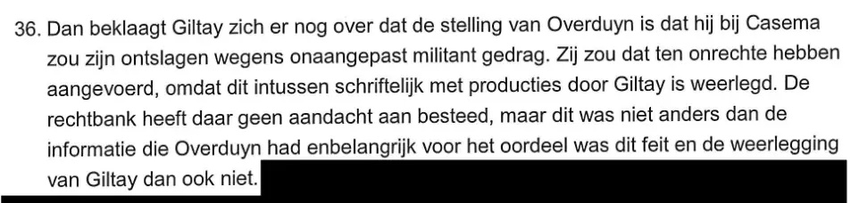

Prueba · Escrito procesal
Escrito de contestación de Overduyn ante el Tribunal de Apelación de La Haya, 2 de febrero de 2016
El pasaje
«36. Giltay se queja además de que Overduyn sostiene que habría sido despedido de Casema por un comportamiento militante inadaptado. Ella lo habría alegado sin razón, porque entretanto Giltay lo ha refutado por escrito aportando documentos. El tribunal no le prestó atención, pero esto no era distinto de la información que tenía Overduyn y, por tanto, este hecho y la refutación de Giltay no eran importantes para la decisión». Página 11 del escrito, la segunda página de este extracto, punto 36. Traducido del neerlandés; el texto original figura a continuación.
Texto original
“36. Dan beklaagt Giltay zich er nog over dat de stelling van Overduyn is dat hij bij Casema zou zijn ontslagen wegens onaangepast militant gedrag. Zij zou dat ten onrechte hebben aangevoerd, omdat dit intussen schriftelijk met producties door Giltay is weerlegd. De rechtbank heeft daar geen aandacht aan besteed, maar dit was niet anders dan de informatie die Overduyn had enbelangrijk voor het oordeel was dit feit en de weerlegging van Giltay dan ook niet.” El propio documento escribe dos palabras juntas, «enbelangrijk», en lugar de «en belangrijk» (e importante). El resto de ambas páginas está tachado, de modo que solo son visibles el membrete y el punto 36.

Por qué importa este documento
Overduyn era la testigo principal del Ministerio de Defensa contra Giltay. Su afirmación de que él, como trabajador cedido por la empresa de trabajo temporal Randstad, habría sido despedido de Casema por «comportamiento irritante e inadaptado» se convirtió en la posición del ministro en el informe público del Defensor del Pueblo de los Países Bajos (Nationale ombudsman) de 1999. En este escrito de contestación, diecisiete años después, su abogado recoge el agravio de Giltay y deja sin impugnar lo esencial.
La subordinada «porque entretanto Giltay lo ha refutado por escrito aportando documentos» está en indicativo, no en condicional («lo habría refutado») ni con un «según Giltay», y en la frase siguiente el propio escrito habla de «la refutación de Giltay». La defensa no sostiene que la afirmación fuera cierta, sino que «esto no era distinto de la información que tenía Overduyn». A ello se suma la tesis de que el hecho y la refutación no eran importantes para la decisión. En el derecho procesal neerlandés, la falta de contradicción es determinante: lo que una parte afirma y la otra no impugna, o no impugna suficientemente, el juez debe considerarlo un hecho establecido (artículo 149 del Código de Procedimiento Civil neerlandés, Rv). En este procedimiento quedó así establecido que la afirmación sobre el despido había sido refutada. El ministerio nunca retiró la calificación de Giltay que figura en el informe del Defensor del Pueblo. El texto que acompaña la cita en la sección de voces resume el escrito con las palabras «deja sin impugnar tras 17 años».
Procedencia
- Documento
- Escrito de contestación en apelación (memorie van antwoord), extracto
- Órgano jurisdiccional
- Tribunal de Apelación de La Haya
- En nombre de
- Barbara Overduyn, con domicilio en Zoetermeer, apelada
- Contra
- Edwin Franciscus Giltay, con domicilio en La Haya, apelante
- Abogados
- R.F. Thunnissen, STV Mahieu advocaten en mediators, por Overduyn; J.G.J. van Groenendaal por Giltay
- Audiencia
- 2 de febrero de 2016
- Número de expediente
- Rolnr. 200183987 (número de registro de la causa)
- Idioma
- Neerlandés
- Páginas
- Páginas 1 y 11 de 15; el resto del texto de ambas páginas está tachado
- Conservado por
- Archivo del autor
- Véase también
- Investigación interna para el jefe de Estado Mayor del MID, 12 de febrero de 1999Informe 1999/507 del Defensor del Pueblo de los Países Bajos, 17 de diciembre de 1999Escrito de apelación de Giltay contra Barbara Overduyn, 8 de enero de 2016
Citado en:
- el ensayo «La prohibición cayó, el libro quedó en pie» en los capítulos (7) «Ninguna respuesta sobre el fondo», (10) «Grietas en el muro» y (11) «Poner fin al silencio sobre Srebrenica»
- la sección de voces bajo el epígrafe «Luz de gas»
- la biografía del autor.
Documento: https://
Modificado por última vez el 13 de septiembre de 2026, consultado el 27 de noviembre de 2026.

Esta página es una ficha de prueba del libro El general del encubrimiento de Edwin Giltay y del sitio web que lo acompaña.